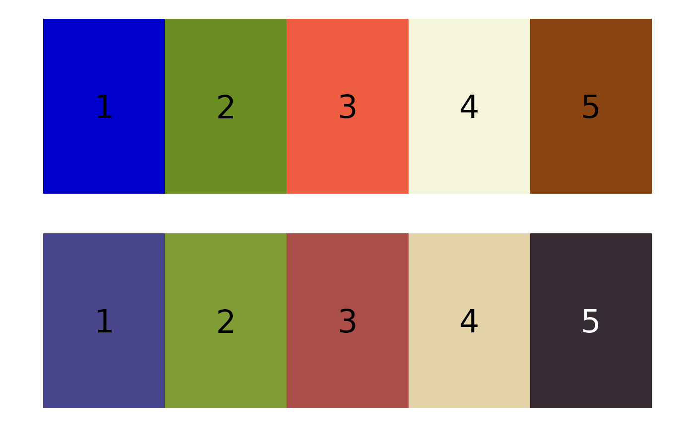

Reorder a color palette to best match a reference palette
Source:R/reorder_colors.R
match_colors.RdOften for batch processing purposes, it is important to ensure
that color centers fit using different methods are in the same
order. This function reorders a provided color palette (match_palette)
according a provided reference palette (reference_palette) by minimizing
their overall distance using the
Hungarian algorithm
as implemented by clue::solve_LSAP.
Details
If the color palettes are wildly different, the returned order may not be especially meaningful.
Examples
ref_palette <- c("mediumblue", "olivedrab", "tomato2", "beige", "chocolate4")
match_palette <- c("#362C34", "#E4D3A9", "#AA4E47", "#809C35", "#49468E")
match_colors(ref_palette, match_palette, plotting = TRUE)
#> Registered S3 method overwritten by 'spatstat.geom':
#> method from
#> plot.imlist imager

#> Optimal assignment:
#> 1 => 5, 2 => 4, 3 => 3, 4 => 2, 5 => 1